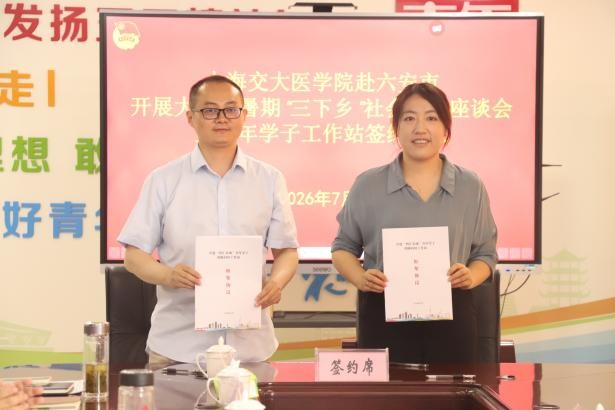

原本书面上“沪六医疗协作”的宏大规划，在这个会议室里，变成了具体而鲜活的定格。照片里，共青团六安市委副书记苏原和上海交通大学医学院团委副书记程雅青并肩而立，手中的红本协议是一份沉甸甸的约定。签约落笔的瞬间，合作便从纸面落到了地上，“智汇皋城”这四个字，不再只是文件里的名词，而真正成了连接青年医学生与基层医疗的纽带。这份协议的背后，将会是青年医学生们在六安的诊室里把书本知识变成真本事，而那片渴求优质医疗资源的土地，也会用最热忱的怀抱，接住这群年轻的有志者。一场关于成长与反哺的双向奔赴，就此拉开序幕。
实践现场 008 / 018
一份约定，连接沪六
六安 · 校地合作签约
